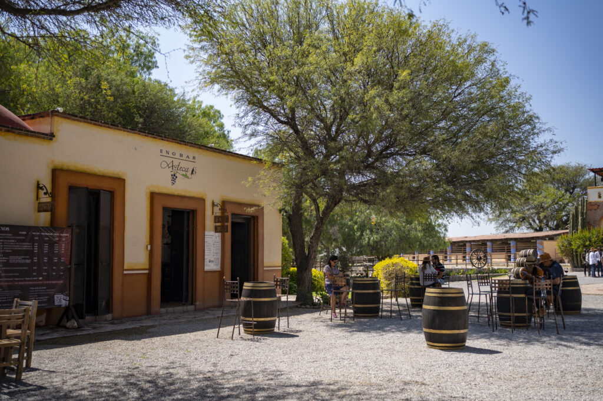

TALLERES
Escuelas de Gastronomía, turismo, ingenierías, sommeliers.
-Taller en salón con proyección sin coffee break (se cotiza por separado a petición del grupo).
-Introducción a la Viticultura.
-Introducción a la enología.
-Viticultura extrema de Querétaro.
-Recorrido guiado por viñedo y bodega.
-Degustación guiada de vino y copa grabada de obsequio (incluye agua natural).
· Opcional - Alimentos y bebidas, se solicitan y cotizan por separado.